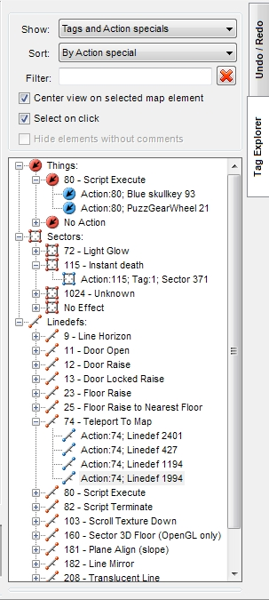

| The Tag Explorer plugin lets you view all things, sectors and linedefs, which have tags and/or actions/effects assigned to them. It also allows you to view all polyobject-related things and linedefs. It allows you to filter by tag, effect or polyobject number. If the current map is in UDMF map format, it also allows you to edit comments of things, sectors and linedefs and search an item by a comment. Usage: Right-click an item to open the Edit menu. Double-click an item to edit a comment (UDMF-only). Remove the comment text to clear comment. Special filter options: Enter "#" + tag number to show only elements with this tag. Example: enter "#12" to show elements with tag 12. Enter "$" + effect or action number to show only elements with this effect or action. Example: enter "$9" to show elements with "Line Horizon" effect. Enter "^" + polyobject number to filter by polyobject number. |
 |